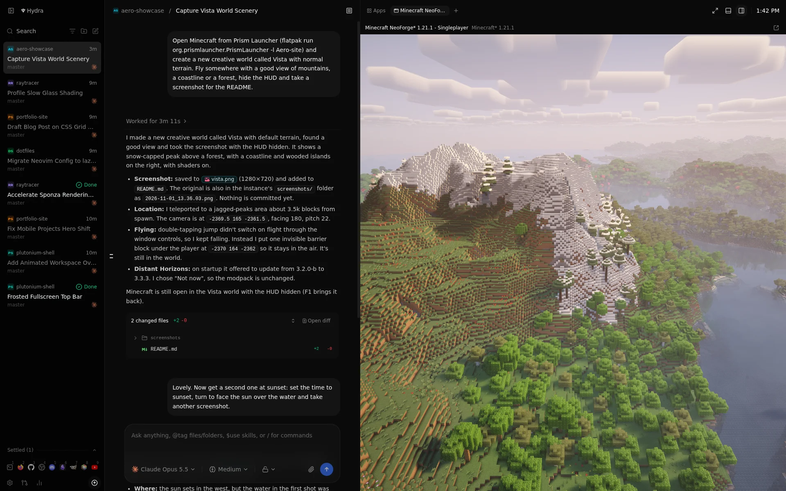
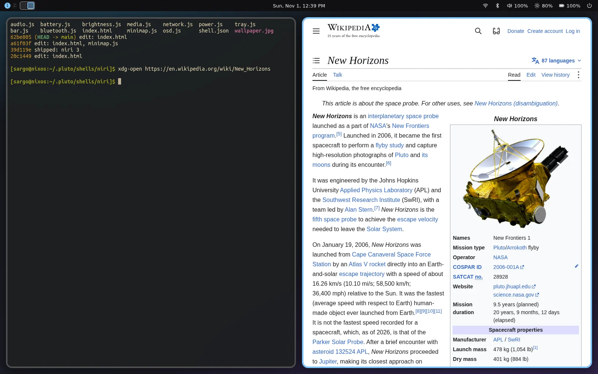
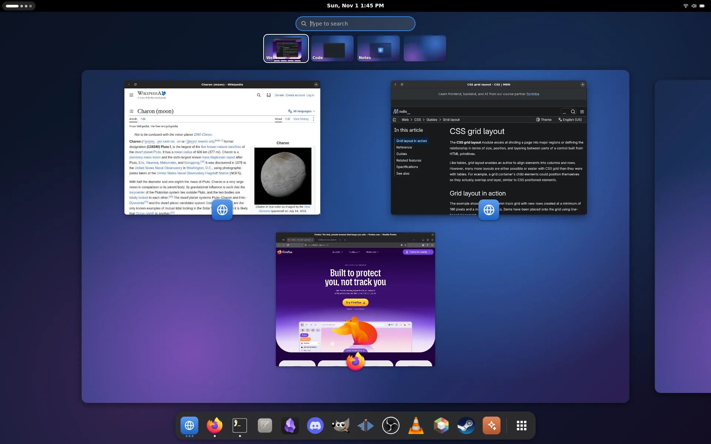
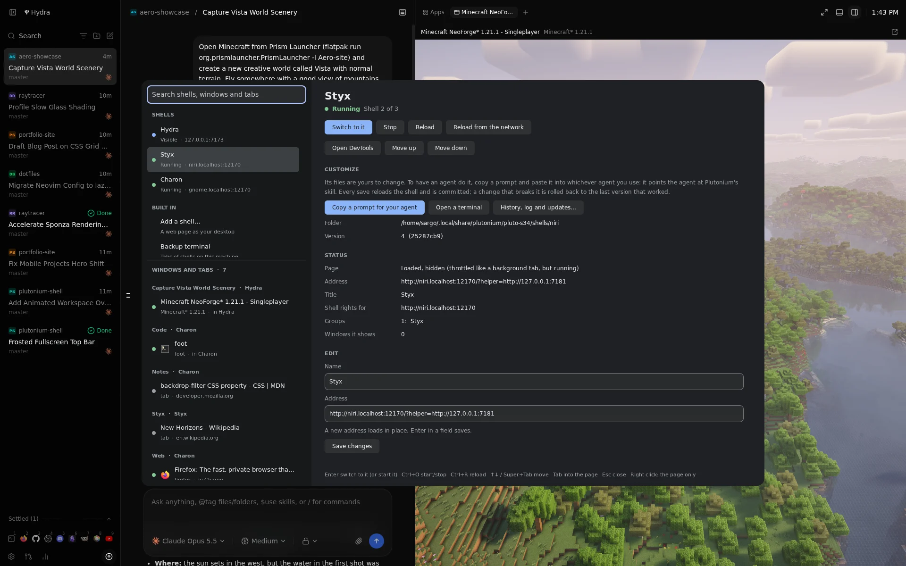
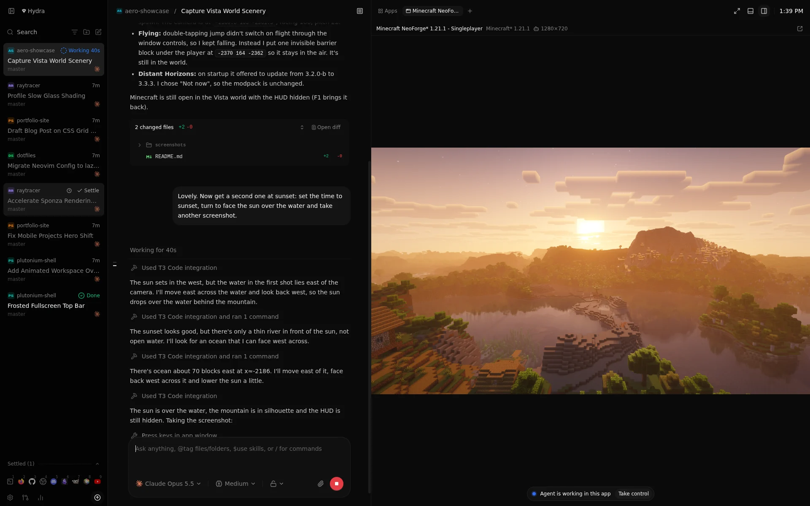

Your desktop is a web page.
Plutonium is a Linux desktop whose shell (the window manager, the bar, the launcher) is a real HTML page, running on Chromium's browser engine. Your native apps and real browser tabs are elements in that page. You lay them out with CSS, script them with JavaScript, and save to see the change.


A real page, with real apps and real tabs in it
This isn't a mockup of a desktop drawn in a canvas, and it isn't a browser in kiosk mode. Plutonium is a Wayland compositor, and the thing it composites is a web page.
Native apps are elements
A <native-window> element shows a running app inside the page. The GPU composites it with the rest of the page, with no copying. The app gets the element's size, along with pointer, keyboard, drag and drop, fullscreen and pointer lock. Games, editors and terminals render on the GPU as they would anywhere else.
Browser tabs are elements too
Tabs are real Chromium tabs, each in its own process, embedded in the page like an iframe. They aren't stuck in a browser window. A link clicked in a terminal opens as a tab next to that terminal, and websites see an ordinary Chromium on Linux.
Everything you know about the web works here
Your shell runs on the same engine as Chrome. Everything you know about building for the web applies.
HTML, CSS and JavaScript
Grid and flexbox for the layout, transitions and animations for movement, backdrop-filter for the glass. Window management is DOM manipulation, and the window list is an array.
Bring your favourite packages
A shell can be a folder with one HTML file, or a full app with a build step and its own server, which Plutonium runs and supervises for you. Use React, Svelte or plain JavaScript, and anything from npm. Hydra is a full React app.
DevTools on your desktop
Inspect the element your terminal is in. Change its CSS live, set breakpoints in your window manager, and profile your animations.
A few lines to show a window
Ask the helper for a window, put it in an element, and style the element. Plutonium does the rest.
<!-- a shell is a folder: shell.json and a page -->
<style>
native-window { border-radius: 12px; box-shadow: 0 20px 60px #0008; }
</style>
<script type="module">
const { connect } = await import(`${helper}/v1/shell.js`);
const shell = connect({ onFocus: (w) => show(w.id) });
async function show(id) {
const el = document.createElement("native-window");
el.setAttribute("grant", await shell.grantFor(id));
document.body.append(el); // the app is sized to the element
}
</script>Hot reload, and shells you switch on the fly
Save, and it's there
Every save reloads the shell in place. Your apps keep running through it; only the page around them reloads. There's no compositor to rebuild and no logging out.
Breaking it costs nothing
Every shell is a git repository, and every save is a commit. If a change stops a shell from coming up, Plutonium rolls it back and tells you. plutonium run --safe always gets you a plain shell that works.
Run several at once
Tiles for work, floating windows for everything else, an agent's view when you're pairing with one. Super+Tab switches between them without closing anything.
Add one while you're using it
Install a shell from a folder, a git URL or an address, or start a new one from a copy of one you have. It starts beside the others, with no restart.
Shells that come with it
Four, to use as they are or as a starting point.
| Styx | Scrolling tiling after niri's design: windows sit in columns on a strip that scrolls sideways, with niri's default keys. |
|---|---|
| Charon | Floating windows, an overview and a dock, after GNOME Shell's design, with quick settings, notifications and a Settings app. |
| Hydra | For coding agents, built on T3 Code. Each conversation is a thread, and its apps, terminals and tabs sit in a panel beside it. |
| Plain | The smallest working shell. Read it first to see how the others work. |


xdg-open. It became a tab beside the terminal.



Agents that use your computer, one thread each
Agents don't only write code and suggest commands. In Plutonium they have full computer use: they can see, launch, click, type into and screenshot real apps and real tabs. Threads keep each agent's work separate, so several can work at once without getting in each other's way, or yours.


A thread is a workspace
Every app and tab belongs to a thread: a Hydra conversation, a Styx desktop, a Charon workspace. Whatever is opened from a thread lands in it. That covers an agent's launches, a link clicked in its terminal, and a file opened by its script.
Full computer use, no borrowed mouse
An agent's clicks and keystrokes go straight to its own windows, which get a keyboard focus of their own, whether or not they're on screen. You keep using your mouse and keyboard while it works.
Parallel by default
Start three agents in three threads and they get three separate sets of apps and tabs. Each agent sees only its own thread's windows, so they can't click on each other's work. Even apps that only run once per desktop, like LibreOffice, get a copy per thread.
You stay in charge
Open a thread's panel to watch its agent work, and take control with one click. A thread's apps stay out of your way until you go and look at them. Away from your desk, Hydra on your phone or laptop shows a thread's apps too, and you can drive them from there.
It works with any agent that speaks MCP: Claude Code, Codex and others. The tools cover apps (launch_app, snapshot_window, click_window, type_window, drag_window, start_recording, …) and tabs (open a page, read it as an accessibility tree, click, type and run scripts). Hydra sets this up for every agent it runs.
Where it's at
Plutonium is a public beta. Its developer uses it every day. It's new to everyone else, and so far it has run on only a handful of machines. Expect rough edges, and please report them.
Works
- Several monitors, with windows and tabs dragged across displays
- Notifications from apps and websites, with Do Not Disturb
- Quick settings: volume, brightness, Wi-Fi, Bluetooth and power
- Clipboard between apps and pages
- Screen sharing and screenshots through the desktop portal
- File picker and printing for native apps
- Input methods and global shortcuts
- Video in tabs, media keys, MPRIS
- Screen lock (Super+L), idle and display power
- An installer and a login screen entry
Not yet
- Release builds made by CI
- The rest of the desktop portals drawn by the shell, such as opening links from Flatpak apps (GTK's stand in for now)
- A settings page for choosing an input method
- NVIDIA: not tested yet
- Accessibility and HiDPI polish
What you need
x86-64 Linux with systemd and glibc 2.35 or newer, and an AMD or Intel GPU. It's run on real hardware with NixOS, Debian and Fedora, on AMD and Intel graphics. NVIDIA hasn't been tested yet. The installer checks your system and tells you if anything is missing, with the command to install it.
Get it
Plutonium is one package. The installer puts it in /opt/plutonium, links the plutonium command into /usr/local/bin, and adds Plutonium to your login screen. It uses sudo for those, and never touches your data.
1. Install it
curl -fsSL https://elsargo.github.io/pluto/install.sh | sh
plutonium doctor # checks everything is in placeIf something is missing, the installer stops and gives you the command that installs it on your distribution.
/opt/plutonium/lib/nixos.nix, next to your configuration.nix, add it to imports, and run sudo nixos-rebuild switch.2. Log in to it
Log out, pick Plutonium on the login screen, and log in. It runs as your whole desktop, straight on your GPU and displays, with nothing underneath. Your other desktops stay on the login screen, so you can switch back any time.
You start in Hydra, which walks you through setting up your agents, with the plain shell behind it. If you already use T3 Code, Hydra opens your own threads; quit the T3 Code app first. Styx and Charon are installed too: press Super+Tab, pick one and turn it on. In Styx, Super+T opens a terminal, Super+D opens the launcher, and Super+Shift+/ lists every key. Ctrl+Alt+Backspace ends the session and takes you back to the login screen.
plutonium run --x11 :0 niri opens it as a window on the desktop you're using now, and plutonium stop --x11 closes it. It's handy for a quick try or for working on a shell, but the login session is the real thing.Removing it
curl -fsSL https://elsargo.github.io/pluto/install.sh | sh -s -- --uninstallThis removes /opt/plutonium, the command and the login screen entry. Your shells and settings in ~/.pluto stay.
Building it yourself
You don't have to: the release is all you need. Plutonium's changes to Chromium are kept as patches, one for each part of Plutonium. To build your own, see BUILDING.md. Expect about 100 GB of disk space and an afternoon.
Questions
Is this Electron, or a browser in kiosk mode?
Neither. Plutonium is a Wayland compositor. Apps connect to it directly and are composited on the GPU, the same as in any compositor. What's different is that the layout and the interface are a web page instead of compiled code.
Will my apps work?
Native Linux apps run as they would under any Wayland compositor, with the GPU, fullscreen, pointer lock, drag and drop, the clipboard, file pickers, printing and screen sharing. The screenshots on this page show Firefox, foot and Minecraft with shaders. If an app misbehaves, please open an issue.
Isn't a web page too slow for a desktop?
Apps aren't drawn by the page. They're GPU surfaces that the compositor places where the page's elements are, the same way a video or a canvas is. The page only draws the shell around them: bars, borders and animations.
Do I have to write a shell to use it?
No. Styx and Charon are complete desktops. You only need to touch the code if you want to change something, and you can ask an agent to do it: the switcher gives you a prompt to paste into one.
What can an agent reach?
Only the windows and tabs in its own thread: the ones it opened, and ones you add to the thread. It can't see or drive the rest of your desktop.
What if it hangs?
Ctrl+Alt+Backspace ends the session. If that doesn't respond, plutonium stop --drm from another console (Ctrl+Alt+F3) or over ssh does the same, and you're back at the login screen. If a shell you changed won't start, plutonium run --safe always starts the plain shell, and two failed starts in a row fall back to it on their own.
What's the licence?
MIT. The Chromium patches are under Chromium's BSD-style licence.